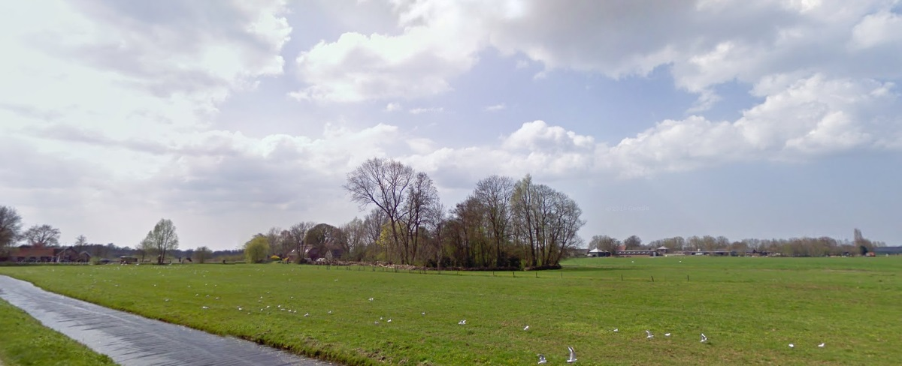

Foto van mevr. A. Hulsing-Meulman.
Deze boerderij
"Het Uldrink" is bij de ruilverkaveling in de zestiger jaren gesloopt.

Achter dit bosrijke perceel bracht de ongehuwde
Maria van der Pol (1830 - 1911)
haar eerste zonen ter wereld in '53 respectievelijk '55.
Destijds was het adres Looidijk 20, nu is dat Heuvellaan 10 in
Tienhoven.